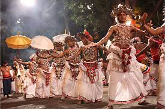

Sri Lanka's culture is a rich amalgam of influences that reflect its history as a maritime hub and colonial crossroads. Buddhism, introduced from India in the 3rd century BCE, is a major influence, shaping its culture, arts, and festivals. The country also has a significant Hindu, Muslim, and Christian population, each contributing to the cultural mosaic. Annual festivities like Vesak (Buddha's birthday) and the Kandy Esala Perahera are highlights, showcasing elaborate rituals and parades.
